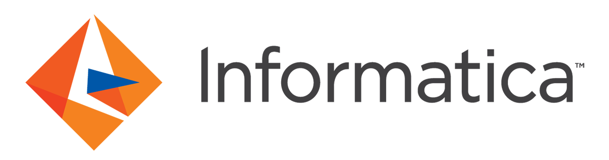
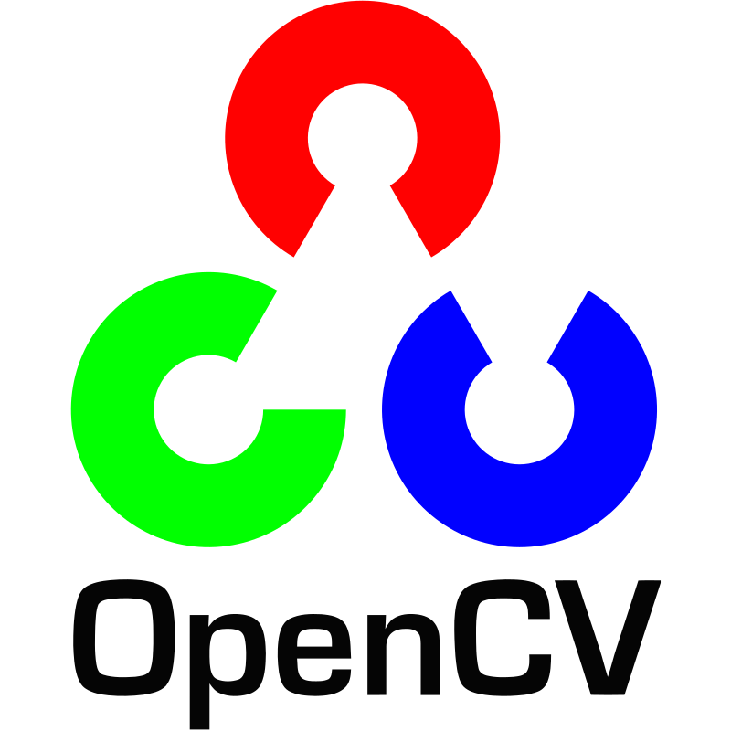

Transforming Data into Intelligent Solutions
Data Engineer & Analyst with expertise in building scalable ETL pipelines, AI-driven analytics platforms, and cloud-native data solutions. CRecent graduate with a Master’s in Applied Data Science from San Jose State University.
About Me
Passionate about turning data into actionable insights
I'm a Data Engineer and Analyst with hands-on experience in building robust data pipelines, implementing AI-driven solutions, and designing scalable cloud architectures. My skill set spans traditional ETL processes to modern machine learning workflows, always with a focus on delivering measurable business value through data-driven insights.
Professional Experience
Building data solutions across leading organizations

Data Engineer – AI & Cloud Systems
Redwood City, CA, USAMay 2024 – Dec 2024
- Built an AI analytics agent with Azure OpenAI + Python for NL-to-SQL translation
- Developed scalable ETL pipelines using Informatica IICS, Databricks (PySpark, SQL)
- Improved data quality to 99.9% using Informatica IDQ on structured/unstructured data
- Managed Spark jobs on AWS EMR with 30% faster execution using spot instance tuning
- Migrated 1TB+ data to Azure Data Lake with row-level security & masking via CDAM
- Created Power BI dashboards for marketing & ops teams to monitor campaign performance
- Deployed containerized workflows using CI/CD pipelines for production reliability
Data Engineer & ML Researcher
Hyderabad, IndiaAug 2022 – Jun 2023
- Designed a BERT-based system to evaluate resume–JD match and predict candidate progression, reducing manual screening by 60% across 100K+ resumes
- Built a custom parser to extract structured data from 10+ formats (PDF, DOCX, scanned resumes), improving parsing accuracy by 70%
- Integrated the parser into a real-time ETL pipeline using Airflow, Spark, and Python, storing results in Azure Data Lake
- Developed Power BI dashboards to visualize candidate fit scores and model confidence, enabling faster decision-making for recruiters
- Secured stakeholder approval for beta deployment by presenting a working prototype and analytics workflow
Academic Experience
Where academic research meets real-world data engineering
Data Engineer Student Assistant
San Jose, CAAug 2024 – Jun 2025
- Assisted in the graduate course DATA 236 – Distributed Systems for Data Engineering
- Supported student learning across Kafka, AWS, Kubernetes, REST APIs, Flask, Django, NoSQL, and full-stack data pipelines
- Conducted code reviews and helped optimize distributed system performance and scalability
- Mentored students in deploying applications using React, Flask, and Django in cloud-native environments
- Collaborated with faculty to prepare course materials and real-world distributed system projects
- Promoted industry-aligned best practices and bridged communication between students and instructors
Research Assistant – AI & LLMs
San Jose, CAJan 2024 – Jun 2024
- Conducted AI research on large language models including Gemma, LLaMA 2, and Code LLaMA
- Explored model interpretability using Captum for improved transparency and debugging
- Integrated LangChain into LLM workflows to enhance retrieval-augmented generation (RAG) systems
- Focused on fine-tuning, evaluation, and adaptability of models across complex NLP tasks
Industry Ready Projects
Showcasing impactful data engineering and analytics solutions
Technical Expertise
Core capabilities across data engineering, cloud, analytics & AI
Programming Languages
 Python
Python SQL
SQL PySpark
PySpark R
R
Data Engineering Tools
 Informatica IICS
Informatica IICS Apache Airflow
Apache Airflow Databricks
Databricks Apache Kafka
Apache Kafka
Cloud Platforms
 Azure
Azure AWS
AWS Google Cloud Platform
Google Cloud Platform
AI/ML & Analytics
 TensorFlow
TensorFlow PyTorch
PyTorch NLP & LLMs
NLP & LLMs
OpenCV
Visualization & BI
 Power BI
Power BI Tableau
Tableau
Databases & Frameworks
- MySQL
 MongoDB
MongoDB Flask/Django
Flask/Django React
React
Certifications
Let's Connect
Ready to build something amazing together?